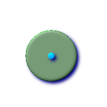

名前
ST_Buffer — (T) ジオメトリ: このジオメトリからの距離が指定された距離以下となるポイント全てを表現するジオメトリを返します．計算は，ジオメトリの空間参照系で行われます．ジオグラフィ: 平面変換ラッパを使います．形状制御のために異なる終端キャップと継ぎ目の設定のサポートが1.5で導入されました．buffer_styleオプションは，quad_segs=#,endcap=round|flat|square,join=round|mitre|bevel,mitre_limit=#.# となります．
概要
geometry ST_Buffer(geometry g1, float radius_of_buffer);
geometry ST_Buffer(geometry g1, float radius_of_buffer, integer num_seg_quarter_circle);
geometry ST_Buffer(geometry g1, float radius_of_buffer, text buffer_style_parameters);
geography ST_Buffer(geography g1, float radius_of_buffer_in_meters);
説明
このジオメトリ/ジオグラフィからの距離が指定された距離以下となるポイント全てを表現するジオメトリ/ジオグラフィを返します．
ジオメトリ: 計算は，ジオメトリの空間参照系で行われます．形状制御のために異なる終端キャップと継ぎ目の設定のサポートが1.5で導入されました．
![[注意]](images/note.png) | |
ジオグラフィ: ジオメトリ実装にかぶさる，薄いラッパです．ジオグラフィオブジェクトのバウンディングボックスに最適なSRIDを決定し(UTMが望ましいですが，ランベルト正積方位図法(北/南)，最悪のシナリオでメルカトルに頼ります)，その平面でバッファを生成し，WGS84ジオグラフィに戻します． |
 ジオグラフィでは，オブジェクトが二つのUTMゾーンをまたいだり，日付変更線をまたぐような，相当に大きい場合には，予期した通りの動作をないかも知れません．
ジオグラフィでは，オブジェクトが二つのUTMゾーンをまたいだり，日付変更線をまたぐような，相当に大きい場合には，予期した通りの動作をないかも知れません．
初出バージョン: 1.5 - ST_Bufferが異なる終端と継ぎ目の型をサポートするよう強化されました．たとえば，道路ラインストリングを，丸の代わりに平坦や四角形の終端を持つ道路ポリゴンに変換するのに便利です．ジオグラフィ用の薄いラッパが追加されました．- 最新のジオメトリ機能の利点を得るにはGEOS >= 3.2が必要です．
第三引数(現在ジオメトリしか適用できません)で，四分の1円に近づけるための区分数を指定でき(整数の場合，デフォルトは8です)，また，空白区切りのkey=valueペア(文字列の場合)を，次に示す操作として指定することができます．
- 'quad_segs=#' : 四分の1円に近づけるための区分数(デフォルトは8)．
- 'endcap=round|flat|square' : 終端スタイル(デフォルトは"round"(丸)，異なる値を指定するにはGEOS-3.2以上が必要). 'butt'は'flat'の同義語として受け付けられます．
- 'join=round|mitre|bevel' : 継ぎ目スタイル(デフォルトは"round"(丸)，異なる値を指定するにはGEOS-3.2以上が必要)．'miter'は'mitre'(マイター)の同義語として受け付けられます．
- 'mitre_limit=#.#' : マイターの割合制限(継ぎ目スタイルがmitreの場合のみ)．同義語として'miter_limit'も受け付けられます．
半径の単位は空間参照系の単位です．
入力は，ポイント，マルチポイント，ラインストリング，マルチラインストリング，ポリゴン，マルチポリゴン，ジオメトリコレクションが可能です．
| |
この関数は三次元(Z軸)は無視し，三次元ジオメトリが与えられても，常に二次元バッファを返します． |
GEOSモジュールで実現しています
 このメソッドは OpenGIS Simple Features Implementation Specification for SQL 1.1.を実装するものです． s2.1.1.3
このメソッドは OpenGIS Simple Features Implementation Specification for SQL 1.1.を実装するものです． s2.1.1.3
このメソッドはSQL/MM仕様の実装です． SQL-MM 3: 5.1.17
| |
この関数を半径探索に使おうとして失敗する人がいらっしゃいます．バッファを生成して半径探索に使うのと遅いし無意味です．ST_DWithinを使います． |
例
 quad_segs=8 (default)
SELECT ST_Buffer(
ST_GeomFromText('POINT(100 90)'),
50, 'quad_segs=8');
|  quad_segs=2 (lame)
SELECT ST_Buffer(
ST_GeomFromText('POINT(100 90)'),
50, 'quad_segs=2');
| |
 endcap=round join=round (default)
SELECT ST_Buffer( ST_GeomFromText( 'LINESTRING(50 50,150 150,150 50)' ), 10, 'endcap=round join=round');
| endcap=square
SELECT ST_Buffer( ST_GeomFromText( 'LINESTRING(50 50,150 150,150 50)' ), 10, 'endcap=square join=round');
|  endcap=flat
SELECT ST_Buffer( ST_GeomFromText( 'LINESTRING(50 50,150 150,150 50)' ), 10, 'endcap=flat join=round');
|
join=bevel
SELECT ST_Buffer( ST_GeomFromText( 'LINESTRING(50 50,150 150,150 50)' ), 10, 'join=bevel');
|  join=mitre mitre_limit=5.0 (default mitre limit)
SELECT ST_Buffer( ST_GeomFromText( 'LINESTRING(50 50,150 150,150 50)' ), 10, 'join=mitre mitre_limit=5.0');
| join=mitre mitre_limit=1
SELECT ST_Buffer( ST_GeomFromText( 'LINESTRING(50 50,150 150,150 50)' ), 10, 'join=mitre mitre_limit=1.0');
|
--近似円バッファ
--一つ目は近似を強制するバッファされた点(ダイアグラム参照)
--二つ目は円にポイント二つは八辺のポリゴン(ダイアグラム参照)
SELECT ST_NPoints(ST_Buffer(ST_GeomFromText('POINT(100 90)'), 50)) As promisingcircle_pcount,
ST_NPoints(ST_Buffer(ST_GeomFromText('POINT(100 90)'), 50, 2)) As lamecircle_pcount;
promisingcircle_pcount | lamecircle_pcount
------------------------+-------------------
33 | 9
--明るいが不十分な円
--四分の一円で二点だけの八角形です．
--次に示すのは100メートルの八角形です．
--座標系は，メートル単位マサチューセッツ州平面に変換した
--NAD 83経度緯度で，メートルでバッファを取っています．
SELECT ST_AsText(ST_Buffer(
ST_Transform(
ST_SetSRID(ST_MakePoint(-71.063526, 42.35785),4269), 26986)
,100,2)) As octagon;
----------------------
POLYGON((236057.59057465 900908.759918696,236028.301252769 900838.049240578,235
957.59057465 900808.759918696,235886.879896532 900838.049240578,235857.59057465
900908.759918696,235886.879896532 900979.470596815,235957.59057465 901008.759918
696,236028.301252769 900979.470596815,236057.59057465 900908.759918696))
--バッファはしばしば手軽なポリゴン訂正に使われ，時々速い結合に使われます．
--時々不正なポリゴンを訂正できます - 下の例で使っています．
--この使い方はどれにでも使えますが，ポリゴンが空ジオメトリになります．
--また，ジオメトリコレクションではポリゴンでないコレクションは切られます．
--手軽なポリゴン訂正は次の通りです．
SELECT ST_IsValid(foo.invalidpoly) as isvalid, ST_IsValid(ST_Buffer(foo.invalidpoly,0.0)) as bufferisvalid,
ST_AsText(ST_Buffer(foo.invalidpoly,0.0)) As newpolytextrep
FROM (SELECT ST_GeomFromText('POLYGON((-1 2, 3 4, 5 6, -1 2, 5 6, -1 2))') as invalidpoly) As foo
NOTICE: Self-intersection at or near point -1 2
isvalid | bufferisvalid | newpolytextrep
---------+---------------+------------------------------
f | t | POLYGON((-1 2,5 6,3 4,-1 2))
--手軽なポリゴン結合
SELECT ST_AsText(the_geom) as textorig, ST_AsText(ST_Buffer(foo.the_geom,0.0)) As textbuffer
FROM (SELECT ST_Collect('POLYGON((-1 2, 3 4, 5 6, -1 2))', 'POLYGON((-1 2, 2 3, 5 6, -1 2))') As the_geom) as foo;
textorig | textbuffer
-----------------------------------------------------------+--------------------
MULTIPOLYGON(((-1 2,3 4,5 6,-1 2)),((-1 2,2 3,5 6,-1 2))) | POLYGON((-1 2,5 6,3 4,2 3,-1 2))